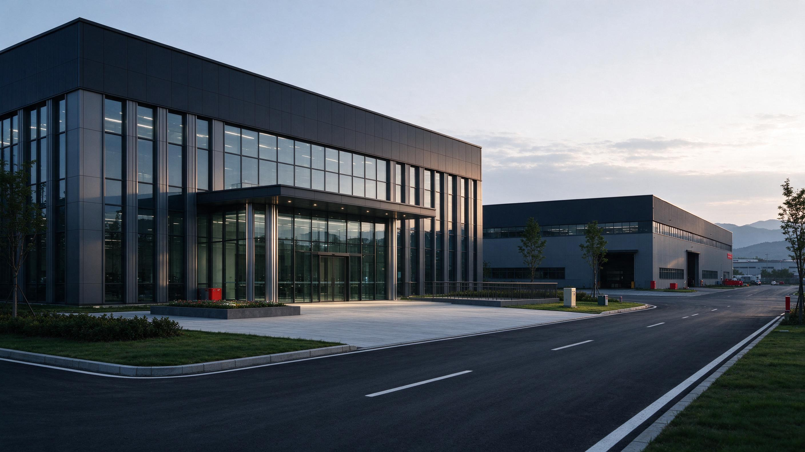
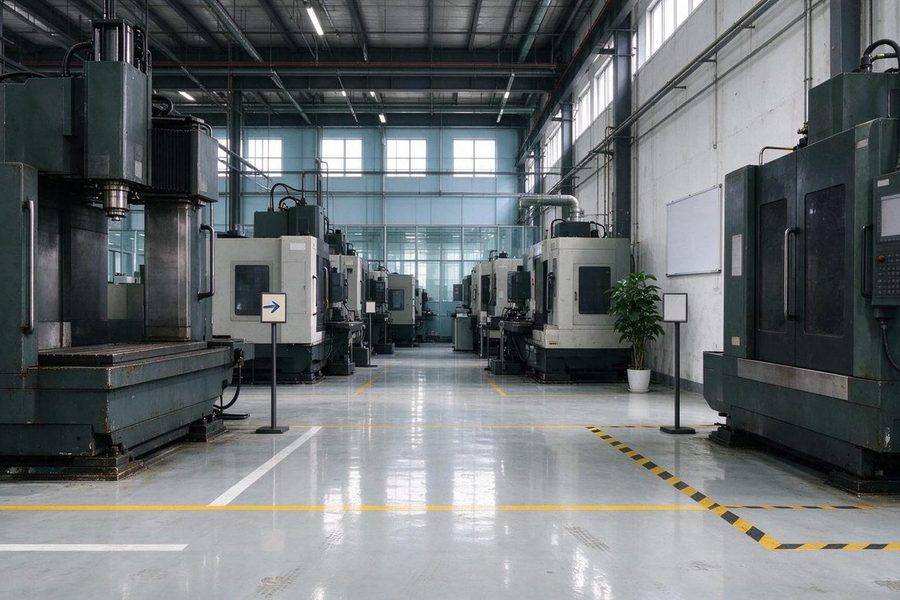

先看现场，再说话
不拿通用方案套客户，先看清问题再承诺。

我们为什么做这件事

每家工厂都在生长：订单在长、产能在长、人员和场地也在长。但很多工厂长着长着就被现场拖住：地面起砂、通道走不通、标识看不清、客户来参观转不开身。
生长是企业的事，让现场配得上生长，是红涂大师的事。我们不主张一次铺一个多么大的摊子，而主张把现场一寸寸做深：地面经得起走、动线经得起看、标准经得起查。
订单、产能、规模持续向前，现场不该成为边界。
以深耕，致长远。把现场一寸寸做深，换来企业的长远。
再大的生长，最终都落在看得见、走得到、能验收的现场。
由主张落到每一次选择

不拿通用方案套客户，先看清问题再承诺。
地面、墙面、标识、动线不是零活凑一起，而是按一套标准做完整。
交付只是起点，年度巡检、维保与更新陪企业继续向前。
写进合同的都有验收方法，做不到的不说，说了的认账。